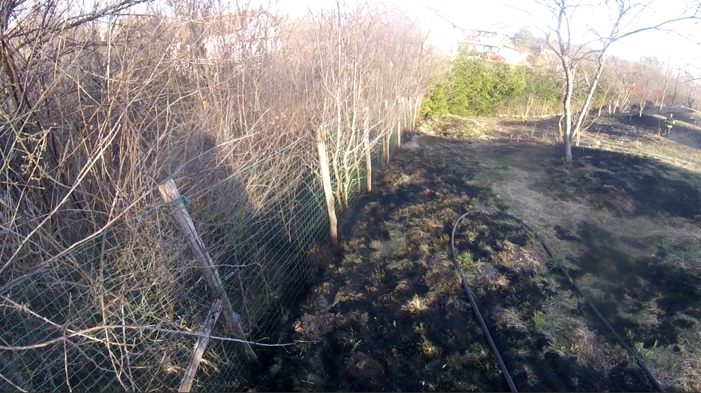

Iz centra za obveščanje smo bili ob 14:03 obveščeni o požaru v Jelšanah pri hišni številki 28. Izvozili smo z GVV2 ter požar manjšega obsega uspešno pogasili. Gorelo je zapuščeno (zaraščeno) grmičevje v neposredni bližini garaže. Zaradi hitrega odziva do gmotne škode ni prišlo.
25.3.2019 ob 12:45 smo se odzvali klicu na pomoč iz PGD Podgrad. Pomagali smo pri gašenju požara v naravi v bližini vasi. Gorela je trava, grmičevje ter borov gozd. Zaradi intenzivnosti gorenja in možnosti razširitve požara so bila aktivirana tudi ostala sosednja društva GZ Il. Bistrica. Požar smo z skupnimi močmi uspešno pogasili.
.jpg)
.jpg)
Ob 16:03 smo bili obveščeni o požaru v naravnem okolju na Velikem Brdu. Izvozili smo z GVV2 ter z GVM. Pred našim prihodom je večji del požara uspel pogasiti sam lastnik zemljišča. Celotno požarišče velikosti 40m2 smo zalili z vodo ter dokončno pogasili tri kurišča v nizkem grmičevju in travi.
V okviru izvajanja požarne straže je bil opažen dim na Dolenjskem polju. Izvozili smo z GVV2 ter požar manjšega obsega pogasili.
Ob 13:48 smo bili iz Regijskega centra za obveščanje informirani o večjem številu klicev zaskrbljenih prebivalcev Novokračin glede višine naraščajoče vode ʺNovokrajskega jezeraʺ. V pregled in analizo stanja so se odpravili štirje gasilci. Zaradi nadaljnjega deževanja in naraščajoče vode smo aktivirali še ostale člane PGD-ja ter preventivno namestili protipoplavne vreče na objekte, ki so najbližje vodi. V veliko pomoč so nam bili tudi vaščani, ki so nam pomagali pri delu. Zaradi obsega intervencije ter še vedno naraščajoče vode smo zaprosili za pomoč še enega društva, ki nam je pomagalo pri postavljanju protipoplavnih vreč in nadziranju situacije. V nočnih urah smo zmanjšali število prisotnih gasilcev ter v nadaljevanju samo še spremljali stanje. Vodostaj je začel upadati , vendar veliko počasneje kot v preteklih letih.
.jpg)
.jpg)

Ob 8:19 je bil iz Regijskega centra za obveščanje poslan poziv o požaru na električni peči za centralno ogrevanje. Na peči je prišlo do okvare termostata, kar je pripeljalo do nepravilnega delovanja. Na srečo je bil požar zaznan še v začetni fazi, tako da se je zaradi hitrega ukrepanja ter aktiviranja razširil le na električno napeljavo peči. Skupaj s PGD Il. Bistrica smo pogasili požar, prezračili prostore ter preventivno preverili podstrešje.